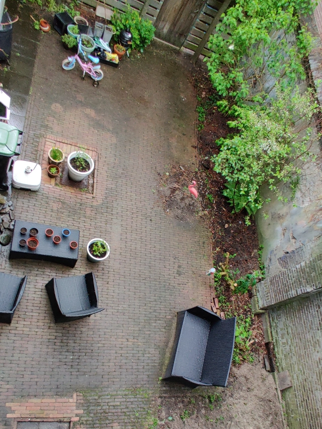
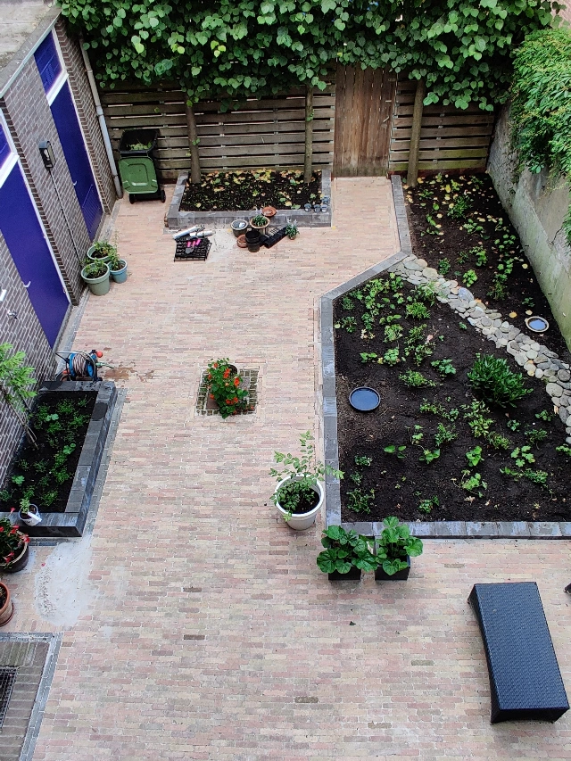
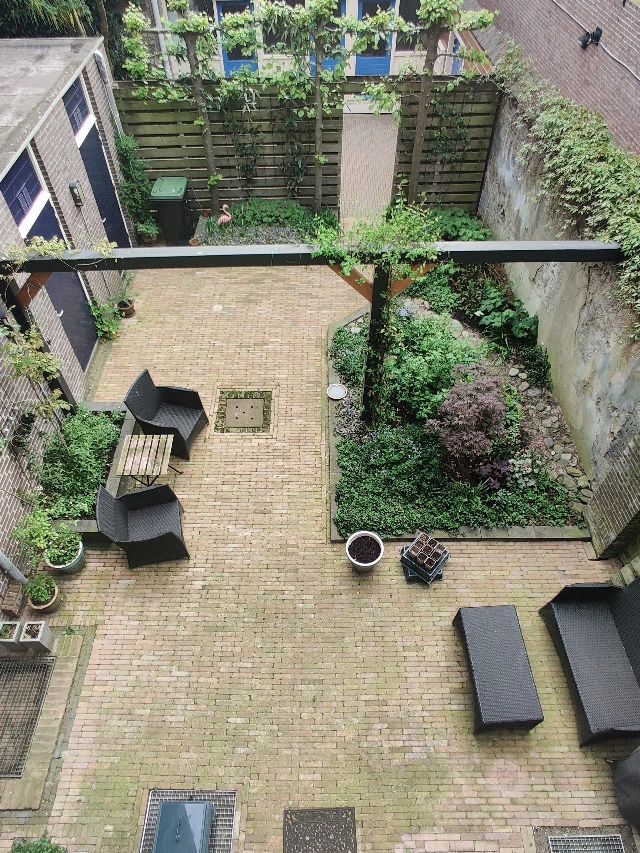

De tuin was een van de eerste items op onze TODO lijst buiten die we hebben opgepakt. We denken graag dat we aardig groene vingers hebben. Het blijft nog altijd een beetje experimenteren wat wel of niet werkt in een schaduwrijke stadstuin.


